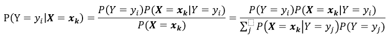
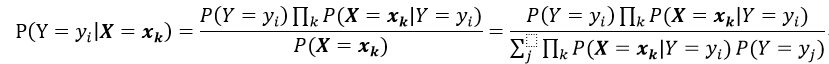
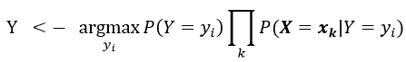
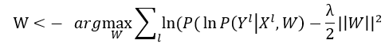

生成式模型和判别式模型：朴素贝叶斯和逻辑斯提回归
Generative and discriminative classifiers: Naive Bayes and Logistic Regression
这是一份基于Tom M. Mitchell机器学习课程的笔记。
1. 通过贝叶斯公式的思想来学习一个生成式模型，分类器

大写的英文字母代表随机变量，而粗体代表向量。
没有偏好的去学习贝叶斯分类器是不切实际的。
根据上面的公式，要想学习一个贝叶斯分类器，我们需要估计多少个参数？
首先，假设我们要得到一个生成式模型；用白话来说就是，我们通过计算类条件似然P(X|Y)、先验概率P(Y)和贝叶斯公式来得到我们感兴趣的后验概率P(Y|X)，基于这个后验概率我们能够对未来的观测点进行分类。
在计算类条件概率P(X|Y)时需要估计2(2^n-1)个参数，非常大的一个数字，通常我们的训练样本都没有那么多。(摘录自西瓜书：类条件概率是所有属性上的联合概率，在有限的训练样本上时很难直接估计得到的，或者说：很多P(X|Y)是无法计算的，因为他们还没有被观测到。)
没有偏好的学习贝叶斯分类器需要面对非常大的样本复杂度。
2. 朴素贝叶斯
条件独立
定义：给定三个随机变量X，Y，Z；我们说X是条件独立于Y，Z的 <=> P(X|Y,Z) = P(X|Y)
朴素贝叶斯


离散变量输入/连续变量输入
估计类条件概率，可以理解为：在事先知道或者只是猜测某个变量可能的概率分布种类的基础上，在训练数据上尽可能的近似该概率分布；然后，在得到的概率分布上建立朴素贝叶斯模型，对新的观测点分类。上述的过程可以理解为一个学习的过程。
举例来说，我们假设某个变量的分布是正态分布的，那么估计概率密度函数，就需要计算某个变量在某个标签下的均值和方差。而在计算离散属性的概率分布时，只需要简单的计数就好可以得到。
3. 逻辑斯提回归
直接从训练集中估计P(Y|X)，是一个判别式模型。
估计逻辑斯提回归的参数
估计逻辑斯提回归的参数可以使用凸优化理论中的经典数值优化算法，如梯度下降法，牛顿法，梯度上升法等等。上面的这些优化算法，不需要朴素贝叶斯的假设，相比较而言，就是多了方差，少了偏差（偏见）。
逻辑斯提回归加上正则化
逻辑回归中会出现过拟合训练数据的问题，特别是当数据维度很高但数据却非常稀疏的时候。改善这个问题的办法是加入一个正则化项：
对参数W的取值是令每个类属于其真实标记的概率越大越好，同时加入一个惩罚项，特别当W的取值很大时会产生影响。详细的正则化在机器学习中扮演的角色，在后续的笔记提及。
多分类的逻辑斯提回归
对于多分类任务，通常有三种方法：
- 一对一，建立N(N-1)/2个分类器。
- 一对其他，只需建立N-1个分类器。
- 多对多，常用技术：纠错输出码。
笔记上对逻辑回归的多分类问题采用的是一对其他的多分类方法。
4.朴素贝叶斯和逻辑斯提回归之间的关系
总结来说，逻辑回归直接在后验概率P(Y|X)上估计参数，而朴素贝叶斯则是在类先验概率P(Y)和类条件概率P(X|Y)（，也称作似然。）上估计参数。前者称为判别式模型，后者称为生成式模型。
笔记上说明了：高斯朴素贝叶斯分类器可以变形为逻辑回归的形式，并且逻辑回归的参数估计可以用贝叶斯分类器的参数来表示。事实上，如果对于高斯朴素贝叶斯的假设成立，那么这两个分类器最后会渐渐收敛到相似的结果。（回顾，假设分别是：假设随机变量都是独立同分布；假设属性相互条件独立）
有趣的地方：
- 如果高斯朴素贝叶斯模型的假设不成立，那么逻辑回归和朴素贝叶斯会学习两个不同的的分类器。这种情况下，逻辑回归的准确率会常常会在一定的训练数据后渐渐地表现得比高斯朴素贝叶斯好。尽管逻辑回归在基于高斯朴素贝叶斯的假设下可以用朴素贝叶斯的参数来表示它自己的参数，但是逻辑回归却并没有严格的规定必须要遵守朴素贝叶斯的假设，变量间的条件独立。也就是说，如果数据集不符合假设，逻辑回归还是会在原有数据集上调整参数来最大化条件似然，即使得到的结果会和朴素贝叶斯估计的参数不同。
- 两种分类器会以不同的速率接近它们的渐进准确率。就像Andrew Ng和Jordan(2002)证明的，高斯朴素贝叶斯的参数估计收敛速度的时间复杂度为O(logn)，n代表数据维度。相比较而言，逻辑回归的参数估计收敛速度比较缓慢，时间复杂度为O(N)。作者也证明了在有足够训练数据的很多情况下，逻辑回归会表现得比高斯朴素贝叶斯好；但是在训练数据缺乏时，则会是相反的情况。
5. 重要的知识点（复习）
- 我们可以使用贝叶斯规则来设计学习演算法（函数近似器），遵循以下步骤：我们希望学习一个目标函数，f:X->Y ，或者相同的P(Y|X)。我们通过训练数据来估计类条件概率P(X|Y)和类先验概率P(Y)。新的观测点X可以根据这些被估计得概率分布和贝叶斯理论来分类。这类型的分类器叫做产生式分类器，取这个名字是因为：我们将估计得到的类条件概率P(X|Y)的分布视为一种描述如何产生一个标签等于Y的随机实例的途径。
- 学习一个贝叶斯分类器需要非常不切实际的训练集大小，除非我们做出一些关于类条件概率的先验假设。朴素贝叶斯，假设所有描述X的特征都是条件独立于Y的，也就是说：P(Xi|Y, Xj) = P(Xi|Y)。这一假设戏剧性的减少了需要估计得参数个数。（从2*(2^n-1)减少到2n）朴树贝叶斯是一个广泛使用的分类器，不管是在离散或者连续的随机变量上。
- 逻辑回归是一个线性分类器，它使用训练数据直接估计后验概率P(Y|X)。和朴素贝叶斯不同，逻辑回归是一个判别式模型，因为我们可以通过查看后验概率来直接判断某一个实例X的标签Y。
- 当训练数据无限大且朴素贝叶斯的假设成立时，逻辑回归算法和朴素贝叶斯算法得到的线性分类器是相似的。然而，如果朴素贝叶斯的假设不成立，那么朴素贝叶斯的偏见会使得它相比较于逻辑回归的准确率下降。换句话说：朴素贝叶斯相对于逻辑回归算法来说是一个高偏见（偏差），低方差的学习算法。但是，如果朴素贝叶斯所假设的偏见在实际情况下是适当的，那么朴素贝叶斯会是一个比较好的学习算法。
- 我们可以将函数逼近学习演算法视为是函数的统计估计子，或者说后验概率的条件分布P(Y|X)。它们估计从训练数据的观测来估计后验概率。当使用其他的统计估计子时，我们可以很容易的辨认一个学习算法在某个训练数据上的偏差和方差。
6. 相关文献
- Wasserman (2004) describes a Reweighted Least Squares method for Logistic Regression;
- Ng and Jordan (2002) provide a theoretical and experimental comparison of the Naive Bayes classifier and Logistic Regression;
7. 练习